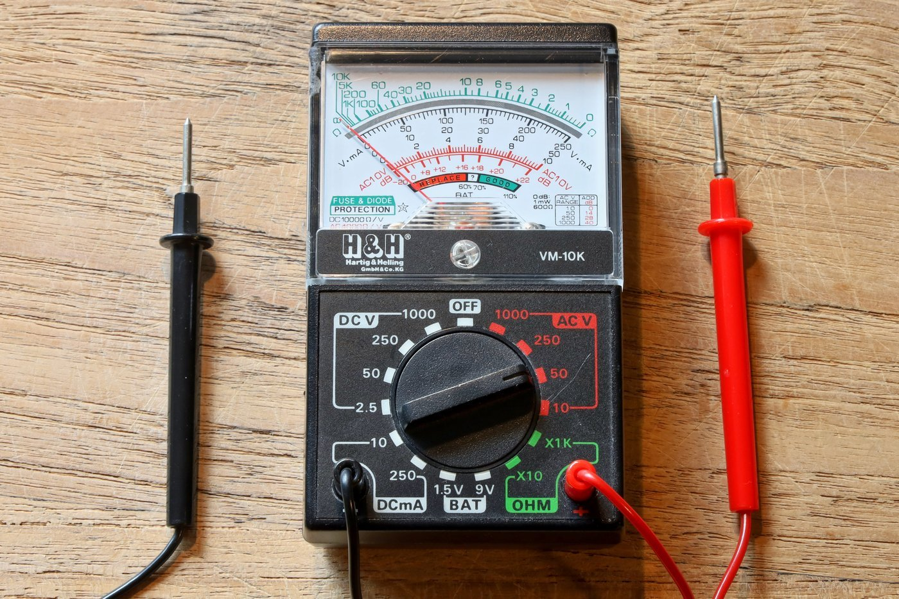
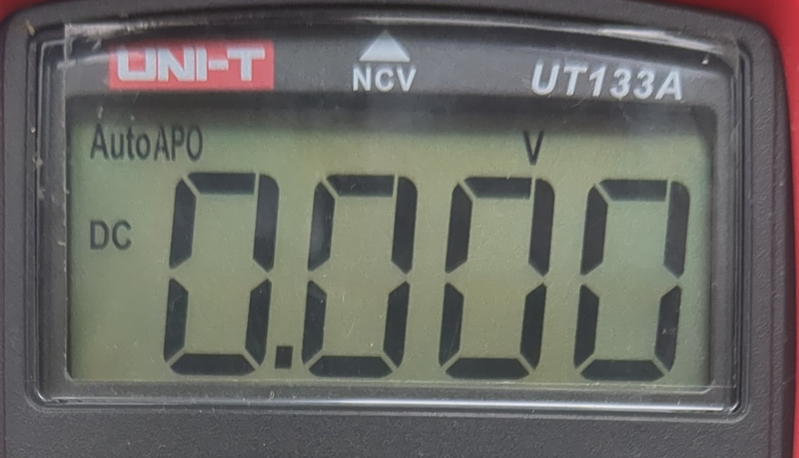

\(u_{A}\) … Standardunsicherheit des Mittelwerts (Typ A)
\(a\) … halbe Breite des angegebenen Intervalls
\(u_{B}\) … Standardunsicherheit (Typ B)
\(u_{c}\) … kombinierte Standardunsicherheit
\(k\) … Ueberdeckungsfaktor (Erweiterungsfaktor)
\(U\) … erweiterte Unsicherheit
\(p\) … Genauigkeitsklasse in Prozent
\(x_{Endwert}\) … Messbereichs-Endwert
\(x_{mess}\) … angezeigter Messwert
\(\Delta x\) … zulaessige Messabweichung
1.1 Physikalische Größen und SI-Einheiten
Eine physikalische Größe ist ein Produkt aus Zahlenwert und Einheit.
Schreibweise nach ISO 80000-1:2022 [1] (Österreich: ÖNORM EN ISO 80000-1:2023 [2]): \(\{x\}\) bezeichnet den Zahlenwert der Größe \(x\), \([x]\) ihre Einheit — z. B. \(\{U\} = 10\), \([U] = \mathrm{V}\) für \(U = 10\ \mathrm{V}\).
Die folgende Gleichung ist keine Rechenformel, sondern eine Schreibkonvention: \(\{x\}\) ist der Platzhalter für den Zahlenwert, \([x]\) der für die Einheit — für eine konkrete Größe setzt man beides ein, z. B. \(\{U\} = 10\), \([U] = \mathrm{V}\). Der eigentliche Punkt dahinter: \(\{x\}\) und \([x]\) gehören immer als Paar zusammen — wählt man eine andere Einheit (etwa mit einem Vorsatz), ändert sich der Zahlenwert mit, die Größe \(x\) selbst bleibt dieselbe.
\(x\) … physikalische Größe = Zahlenwert mal Einheit
\[
x = [x] \{x\}
\tag{1.1}\]
Dieselbe Spannung, zwei Zahlenwert-Einheit-Paare — \(U\) ändert sich nicht, nur \(\{U\}\) und \([U]\). Die korrekte Form ist \(10\ \mathrm{V}\): dort steht eine Zahl mit höchstens drei Ziffern vor dem Komma und ohne 0 davor. Die Form mit \(0{,}01\ \mathrm{kV}\) dient nur der Demonstration der Schreibweise: Richtig ausgewählt wäre der Vorsatz so, dass der Zahlenwert im Bereich 1 bis 999 liegt (siehe den Abschnitt Einheitenvorsätze).
1.1.1 Warum »U [V]« falsch ist und wie es richtig geht
In Laborpraxis und Tabellen sieht man oft „U [V]“ oder „l [m]“. In diesem Buch wird diese Schreibweise nach ISO 80000-1:2022 [1] (Österreich: ÖNORM EN ISO 80000-1:2023 [2]) durch die Quotientenform beziehungsweise die Formulierung „Größe in Einheit“ ersetzt. Die Norm definiert die eckige Klammer als Einheitsoperator und bevorzugt für Zahlenwertangaben die Quotientenform (Beispiel: \(\lambda/\mathrm{nm} \approx 589{,}6\)):
Normativ ist die eckige Klammer ein Operator auf Größen: \([x]\) liest sich als „Einheit von \(x\)“. Sie gehört immer zum Größensymbol — \([U] = \mathrm{V}\) ist eine vollständige Aussage, aber \([\mathrm{V}]\) ist nicht definiert, denn \(\mathrm{V}\) ist eine Einheit, keine Größe. Tabellen- und Achsenbeschriftungen tragen deshalb den Quotienten \(U/\mathrm{V}\) (das ist der Zahlenwert \(\{U\}\)) oder die Umschreibung „\(U\) in V”.
Mathematisch gilt \(x = \{x\}\cdot[x]\) als echtes Produkt. Eine Zahl wie \(10\) hat keine Einheit — \([10]\) ist bedeutungslos. Eine Tabellenspalte mit der Überschrift „\(U\) [V]“ folgt dagegen nicht automatisch der algebraischen Schreibweise; die Klammer wird dort nur uneinheitlich zur Kennzeichnung der Einheit verwendet. Die eindeutige formale Schreibweise für Zahlenwerte ist \(U/\mathrm{V}\) beziehungsweise \(\{U\}\).
Korrekt ist im Fließtext \(U = 10\ \mathrm{V}\). Für Tabellen und Grafiken empfiehlt ISO 80000-1:2022 die Quotientenform \(U/\mathrm{V}\) (liefert direkt den Zahlenwert \(\{U\}\)); daneben ist im deutschsprachigen Raum die Umschreibung „\(U\) in V” üblich — in diesem Buch wird durchgängig „\(U\) in V” verwendet:
Kontext
falsch
richtig
Fließtext
„\(U\ [\mathrm{V}] = 10\)”
\(U = 10\ \mathrm{V}\)
Tabellenkopf
U [V]
\(U\) in V
Achsenbeschriftung
U [V]
\(U\) in V
Messreihe mit Zahlenwerten
U [V]
\(U\) in V (Spalte enthält 10; z. B. 10,2; 9,8)
Beispiel Messreihe als Tabelle:
\(t\) in ms
\(U\) in V
0
10,02
10
9,98
20
10,05
1.1.2 SI-Basiseinheiten
Sieben SI-Basiseinheiten (m, kg, s, A, K, mol, cd); alle weiteren Einheiten sind daraus abgeleitet [3].
Seit der Neudefinition des SI (Beschluss der 26. CGPM 2018, in Kraft seit
Mai 2019) ist jede Basiseinheit über eine Naturkonstante mit exakt festgelegtem Wert definiert — nicht mehr über ein Artefakt (Urkilogramm) oder eine experimentelle Bedingung [3].
Tabelle 1.1: Die sieben SI-Basiseinheiten: jede ist über eine Naturkonstante mit exakt festgelegtem Wert definiert [3].
Beispiele, wie die festgelegte Konstante die jeweilige Einheit festlegt:
Sekunde: Der Übergang zwischen den beiden Hyperfeinstruktur-Niveaus des Grundzustands von \(^{133}\mathrm{Cs}\) entspricht einer Strahlung mit \(\Delta\nu_{\mathrm{Cs}} = 9\,192\,631\,770\ \mathrm{Hz}\) — die Sekunde ist die Dauer von genau so vielen Schwingungsperioden.
Meter: Licht im Vakuum legt in einer Sekunde genau \(299\,792\,458\ \mathrm{m}\) zurück; der Meter ist damit über die Sekunde und \(c\) definiert.
Kilogramm: Fixiert man \(h\), so legen die bereits definierten Einheiten Meter und Sekunde das Kilogramm fest.
Ampere: Über \(e\) sind die elektrischen Einheiten an die mechanischen gekoppelt.
Kelvin:\(k\) verknüpft Temperatur und Energie; das Kelvin ist die Temperaturänderung, die einer Energieänderung von genau \(1{,}380\,649\times10^{-23}\ \mathrm{J}\) entspricht.
Mol: Das Mol ist die Stoffmenge, die aus genau \(N_{\mathrm{A}}\) (also \(6{,}022\,140\,76\times10^{23}\)) Einheiten (Atome, Moleküle, …) besteht.
Candela: Das photometrische Strahlungsäquivalent \(K_{\mathrm{cd}} = 683\ \mathrm{lm/W}\) koppelt Lichtstärke und Strahlungsleistung: Bei monochromatischer Strahlung der Frequenz \(540\times10^{12}\ \mathrm{Hz}\) entspricht in einer gegebenen Richtung eine Strahlstärke von \(1\ \mathrm{W/sr}\) einer Lichtstärke von \(683\ \mathrm{cd}\). Zusammen mit den Definitionen von Meter und Sekunde sind damit alle sieben Basiseinheiten über Naturkonstanten festgelegt.
Abgeleitete Einheiten entstehen durch Multiplikation, Division und Potenzierung der Basiseinheiten — z. B. Geschwindigkeit in m/s, Dichte in kg/m³, Kraft in kg·m/s².
Viele davon haben eigene Namen und Zeichen, die im Alltag geläufiger sind als die Basiseinheiten-Kombination: Volt, Watt, Newton, Pascal. Auch diese sind nichts anderes als Basiseinheiten-Kombinationen — als reine Einheitengleichung (beide Seiten sind Einheiten, keine Größen):
Herleitung über die vertrauteren Einheiten — jedes Gleichheitszeichen ist eine Einheitengleichung: \(\mathrm{V} = \mathrm{W/A} = \mathrm{J/(s\,A)} = \mathrm{N\,m/(s\,A)} = \mathrm{kg\,m^2/(s^3\,A)}\).
Merkregel: In einer Einheitengleichung steht niemals ein Größensymbol wie \(U\). Denselben Inhalt hat die Aussage \([U] = \mathrm{kg\,m^2\,s^{-3}\,A^{-1}}\) — gelesen: „Die Einheit von \(U\) ist \(\mathrm{kg\,m^2\,s^{-3}\,A^{-1}}\)“.
1.1.4 Einheitenvorsätze
Häufige Vorsätze [3]: Mega (\(M = 10^{6}\)), Kilo (\(k = 10^{3}\)), Milli (\(m = 10^{-3}\)), Mikro (\(\mu = 10^{-6}\)), Nano (\(n = 10^{-9}\)), Piko (\(p = 10^{-12}\)).
Als praktische Schreibregel Vorsätze so wählen, dass der Zahlenwert zwischen 1 und 999 liegt: Es stehen dann nie mehr als drei Ziffern vor dem Komma und niemals eine 0 davor — \(12{,}5\ \mathrm{km}\) statt \(12\,500\ \mathrm{m}\), \(750\ \mathrm{mA}\) statt \(0{,}75\ \mathrm{A}\).
1.2 Was ist Messen?
Messen = quantitativer Vergleich der Messgröße mit einer Maßverkörperung (Normal, Referenz) unter festgelegten Bedingungen.
Jede Messung liefert einen Schätzwert der Messgröße — wie gut dieser ist, beschreibt die Messunsicherheit (siehe Kapitel 1.3).
1.3 Messunsicherheit nach GUM
Die moderne Behandlung von Messungen folgt dem Guide to the Expression of Uncertainty in Measurement (GUM, JCGM 100:2008 [4]; deutsche Einführung: JCGM 104 [5]). Kerngedanke: Es gibt nicht den „wahren Wert plus Fehler”, sondern einen Schätzwert und eine Messunsicherheit, die die Streuung der plausiblen Werte der Messgröße kennzeichnet.
Die Messung wird als Modell beschrieben — die Messgröße ist eine Funktion der Eingangsgrößen mit ihren besten Schätzwerten.
\[
Y = f{\left(X_{1},X_{2},X_{3} \right)}
\tag{1.5}\]
Jede Eingangsgröße trägt eine Unsicherheitskomponente in das Unsicherheitsbudget ein — gleich welcher Art ihr Einfluss ist.
Systematische Einflüsse (Kalibrierabweichung, Rückwirkung des Messgeräts, Einflussgrößen wie Temperatur) werden bestimmt und korrigiert; ihr verbleibender Anteil geht ins Budget.
Grobe Fehler (Fehlbedienung, Überlastung) sind keine Unsicherheit — sie erzeugen ungültige Messwerte: erkennen (Plausibilität), verwerfen, wiederholen.
HinweisBegriffe abgrenzen: Messabweichung und Messunsicherheit
In älterer Fachliteratur und Datenblättern begegnet man statt dessen auch heute noch „Messfehler”, „zufälliger Fehler”, „grober Fehler” oder der „Fehlergrenze”. Diese Ausdrücke sind in der gültigen Terminologie durch schärfere Begriffe ersetzt — wer heute normgerecht über Messungen spricht, trennt drei Dinge, die früher in einem Wort zusammenfielen:
Messabweichung (engl. measurement error): Differenz zwischen dem Messwert und einem Referenzwert [6]. Sie gehört zu einer konkreten Messung und ist im Allgemeinen selbst unbekannt, weil schon der Referenzwert nur mit eigener Unsicherheit vorliegt. Formen: die systematische Messabweichung (bleibt unter Wiederholbedingungen erhalten, ihr Schätzwert wird über eine Korrektur berücksichtigt) und die zufällige Messabweichung (ändert sich bei Wiederholungen unvorhersehbar). „Fehlergrenzen“ oder Toleranzgrenzen können weiterhin in Spezifikationen zur Beurteilung einer Abweichung verwendet werden. Sie sind jedoch keine Messunsicherheit und ersetzen bei der Angabe eines Messergebnisses nicht die erweiterte Messunsicherheit \(U\).
Messunsicherheit: Kennzahl für die Streuung der plausiblen Werte der Messgröße — sie charakterisiert die Qualität des Messergebnisses und ist vom Begriff der Messabweichung streng zu trennen. Beide beantworten unterschiedliche Fragen: Die Messabweichung vergleicht einen Messwert mit dem Referenzwert, die Messunsicherheit beschreibt die Streubreite, mit der dieser Messwert behaftet ist. Messabweichung und Messunsicherheit dürfen daher nicht synonym verwendet (2.16, Anm.) — auch ein Messwert mit kleiner Messunsicherheit kann eine große Messabweichung haben, und umgekehrt.
Die Konsequenz für dieses Buch: Es gibt nicht den „wahren Wert plus Fehler”, sondern einen Schätzwert und eine Messunsicherheit — genau wie im Abschnitt Kapitel 1.3 dargestellt. Die klassische Fehlerrechnung bleibt als Denkhilfe nützlich, ihre Fachbegriffe sind jedoch überholt und werden hier bewusst nicht mehr verwendet.
1.3.1 Typ-A-Bewertung: statistisch
Aus \(n\) wiederholten Messungen unter gleichen Bedingungen:
Abbildung 1.2: Typ-A-Auswertung: Streuung wiederholter Messungen um den Mittelwert; der Abstand zum Referenzwert ist eine systematische Messabweichung und wird korrigiert, die Streubreite geht als \(u_A = s/\sqrt{n}\) ins Budget.
1.3.2 Typ-B-Bewertung: nicht statistisch
Aus Vorwissen: Kalibrierzertifikate, Datenblätter, Erfahrungen. Liegt eine Angabe als Intervall \(\pm a\) vor (gleichförmige Verteilung):
Die folgenden zwei Beispiele durchspielen die komplette Auswertung bis zur Ergebnisangabe in der Form \(Y = (y \pm U)\) mit \(k = 2\) (ca. 95 % Überdeckung, begründete Wahl von \(k\): siehe Kapitel 12). Beide benutzen dasselbe Instrument (DMM UT133A, Abbildung 1.4) und unterscheiden sich nur darin, ob einmal oder wiederholt gemessen wird; in beiden Fällen wird die Spannung direkt gemessen, alle Beiträge wirken also ungeschmälert auf \(Y\) (\(c_i = 1\)).
1.3.4 Richtig wählen: der Erweiterungsfaktor k
Der Erweiterungsfaktor \(k\) macht aus der Standardunsicherheit \(u_c\) die erweiterte Unsicherheit\(U = k\,u_c\) — das Intervall \(y \pm U\) soll einen vereinbarten Anteil (meist 95 %) der plausiblen Werte der Messgröße überdecken.
Standard ist \(k = 2\) — eine Konvention ([4], Anhang G), kein Rechenergebnis. Sie setzt voraus, dass die Ausgangsgröße näherungsweise normalverteilt ist und \(u_c\) mit genügend Messwerten bzw. Beiträgen bestimmt wurde. Dann gilt:
In den beiden Beispielen unten ist \(k = 2\) die richtige Wahl. Sonderfälle (nur wenige Messwerte, dominierender Typ-B-Beitrag, Zertifikats-\(k\)) sind selten und werden im Kapitel Weiterführende Themen behandelt (siehe Kapitel 12). Der gewählte Wert von \(k\) gehört immer mit in die Ergebnisangabe — ohne \(k\) ist \(U\) nicht interpretierbar ([4], Abschnitt 7.1.2).
1.3.5 Beispiel 1: Einzelmessung einer Spannung
Situation: Die Spannung einer stabilen Quelle wird mit dem UT133A im 60-V-Gleichspannungsbereich einmalig gemessen; die Anzeige zeigt 10,00 V.
Auswertung Schritt für Schritt:
Messmodell: Direkte Messung — der Schätzwert der Messgröße ist die Anzeige \(y = 10{,}00\ \mathrm{V}\). Alle übrigen Einflüsse (Kalibrier- abweichung, Auflösung, Einflussgrößen) stecken in den Unsicherheitsbeiträgen des Budgets.
Typ A entfällt: Mit nur einem Messwert lässt sich keine Streuung schätzen — die zufällige Messabweichung bleibt unentdeckt. Die gesamte Unsicherheit kommt aus Vorwissen (Typ B). Deshalb ist die Aussage einer Einzelmessung von vornherein schwächer: Sie beschreibt in erster Linie das Instrument, nicht die konkrete Messsituation.
Typ B: Herstellerangabe wie im Abschnitt Typ-B-Bewertung: \(\pm(0{,}7\,\%\,\mathrm{v.\,M.} + 3\ \mathrm{digits})\)[7], Anzeige 10,00 V → \(a = 0{,}10\ \mathrm{V}\), \(u_B = a/\sqrt{3}\). Die Auflösung (10 mV) ist in dieser Angabe bereits enthalten — sie darf nicht zusätzlich ins Budget aufgenommen werden (Doppelzählung).
Kombiniert und erweitert: Mit nur einem Beitrag gilt \(u_c = u_B\); die erweiterte Unsicherheit ist \(U = 2\,u_c\).
Runden und angeben:\(U\) wird auf zwei signifikante Stellen gerundet (0,115 V → 0,12 V), der Schätzwert auf dieselbe Dezimalstelle (GUM [4], Abschnitt 7.2.6):
Gelesen: Das Intervall \([9{,}88;\ 10{,}12]\ \mathrm{V}\) ist die mit dem Erweiterungsfaktor \(k=2\) angegebene erweiterte Unsicherheit. Da hier ein Typ-B-Beitrag mit angenommener Rechteckverteilung dominiert, darf daraus nicht ohne Weiteres eine Überdeckungswahrscheinlichkeit von 95 % abgeleitet werden.
1.3.6 Beispiel 2: Wiederholte Messung einer Spannung (DAQ)
Situation: Dieselbe Quelle wird nicht einmalig abgelesen, sondern mit DAQ-Hardware (Data Acquisition) wiederholt erfasst — so läuft das in der Praxis fast immer: Wiederholte Messungen liest man nicht Messwert für Messwert per Hand ab, sondern nimmt sie automatisch auf.
Multifunktions-Erfassungskarten, kompakte USB-DAQ-Module oder Datenlogger tasten das Messsignal in festen Abständen ab und speichern die ganze Messreihe mit Zeitstempeln — hunderte bis hunderttausende Messwerte entstehen ohne Zusatzaufwand.
Das große \(n\) macht die Typ-A-Bewertung billig: \(u_A = s/\sqrt{n}\) fällt mit \(1/\sqrt{n}\).
Die Typ-B-Beiträge (Kalibrierabweichung, Auflösung) ändern sich durch die Wiederholung nicht — sie beschreiben das Instrument, nicht die Anzahl der Messungen.
Auswertung: Messreihe wie im Abschnitt Typ-A-Bewertung (400 Messwerte, simuliert als DAQ-Aufnahme einer 10-V-Referenz): daraus \(u_A = 0{,}0025\ \mathrm{V}\); aus der Herstellerangabe wie in Beispiel 1 \(u_B = 0{,}058\ \mathrm{V}\). Mit \(c_1 = c_2 = 1\):
\(u_c\) ändert sich gegenüber Beispiel 1 praktisch nicht (0,0577 V → 0,0578 V): Der Typ-B-Beitrag dominiert. Wiederholungen reduzieren nur zufällige Beiträge — wer eine kleinere Unsicherheit braucht, braucht zuerst ein besseres Instrument bzw. eine Kalibrierung, nicht mehr Messungen.
Das Intervall überdeckt den Referenzwert 10,00 V nicht: Der Mittelwert liegt um 0,08 V darüber — eine systematische Messabweichung. Läge die Referenz vor (Kalibrierzertifikat), würde man sie als Korrektur anbringen und nur den verbleibenden Rest ins Budget nehmen (siehe Abbildung 1.2).
1.4 Anzeige: analog und digital
Analoganzeige
Digitalanzeige
Ablesen
Schätzung der Zwischenwerte
eindeutige Ziffern
Dynamik
Trends/Schwingungen gut erkennbar
Trägheit bei schnellen Änderungen
Auflösung
durch Skalenabstand begrenzt
durch Stellenzahl/digits begrenzt

Abbildung 1.3: Analoges Multimeter (HARTIG & HELLING VM-10K): Zeigerinstrument mit Spiegelskala (Islander61, CC BY-SA 4.0, via Wikimedia Commons)

Abbildung 1.4: Zähldisplay eines Digitalmultimeters (UNI-T UT133A): 6000 counts, maximale Anzeige 5999 — die führende Stelle ist keine volle Ziffer (sie kann nur bis „5“ anzeigen), daher spricht man von einer 3¾-stelligen Anzeige; Auflösung 1 digit; Spezifikation nach [7] (eigenes Foto)
1.5 Auflösung und Genauigkeit
Auflösung: kleinste unterscheidbare Wertänderung. Digital: \(Q = \text{Endwert}/\text{counts}\) (3½-stellig: 1999 counts; UT133A wie in Abbildung 1.4: 5999 counts [7]).
Genauigkeit (analog): Genauigkeitsklasse \(p\) — zulässige Messabweichung bezogen auf den Messbereichs-Endwert:
Genau genommen bezieht die Genauigkeitsklasse nach IEC 60051-1 [8] sich auf die Bezugsgröße (fiducial value) des Instruments: Bei den meisten Strom- und Spannungsmessern ist das der Messbereichs-Endwert (obige Gleichung), bei Instrumenten mit unterdrücktem Nullpunkt oder anderen Skalenformen kann sie davon abweichen.